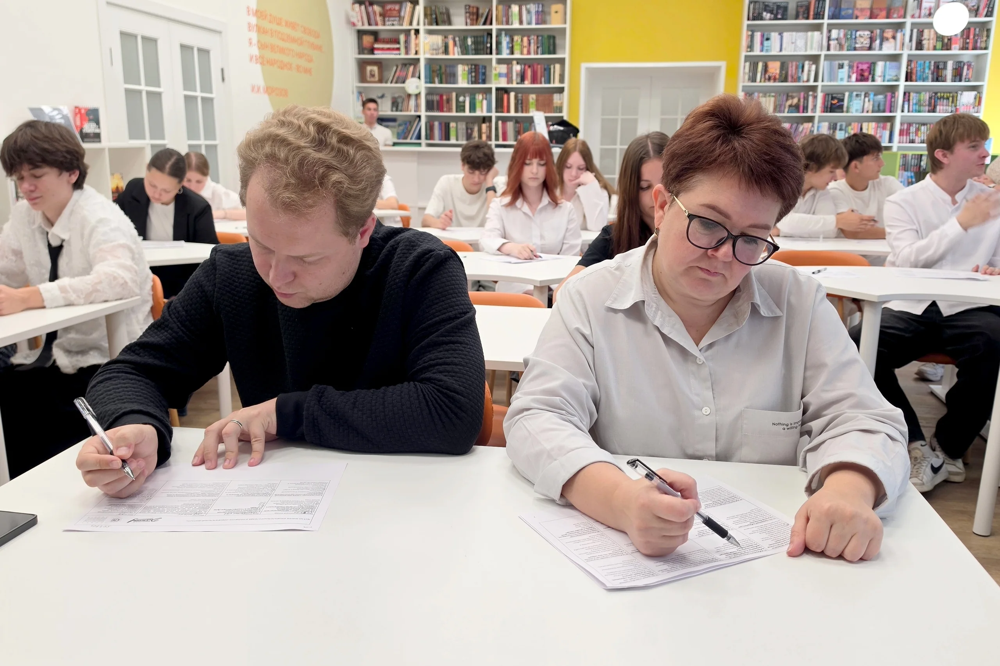
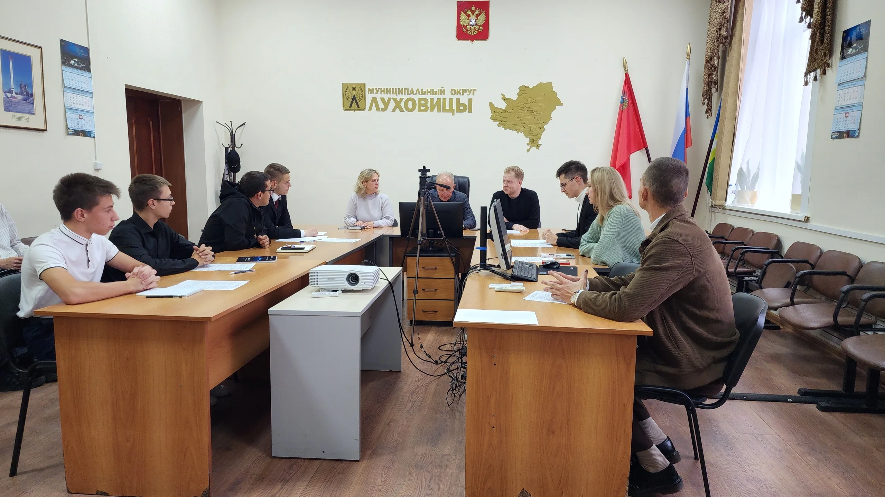
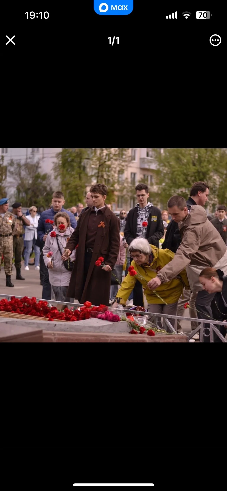
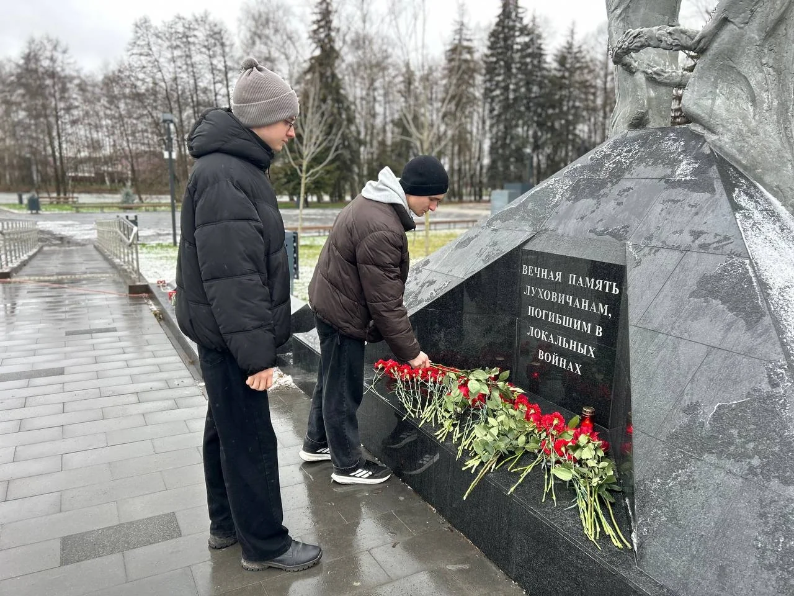
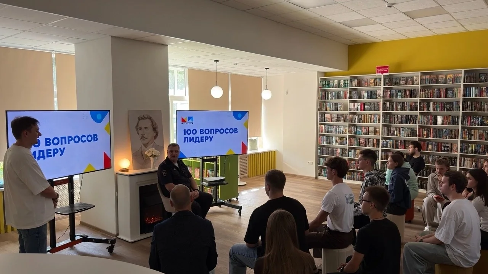
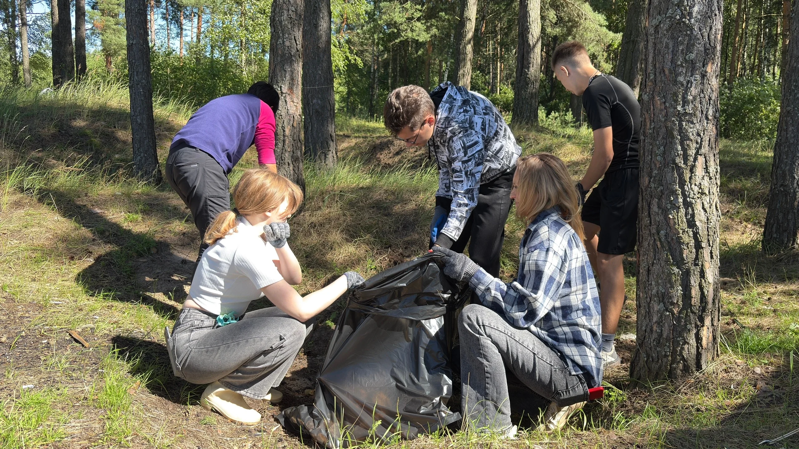
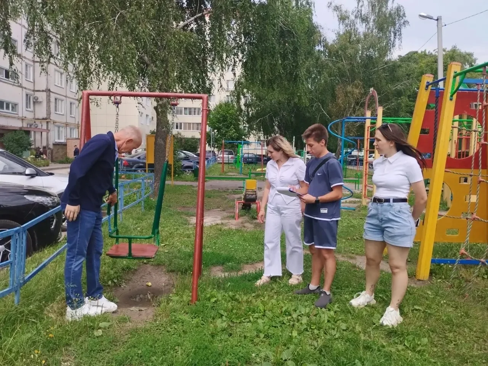
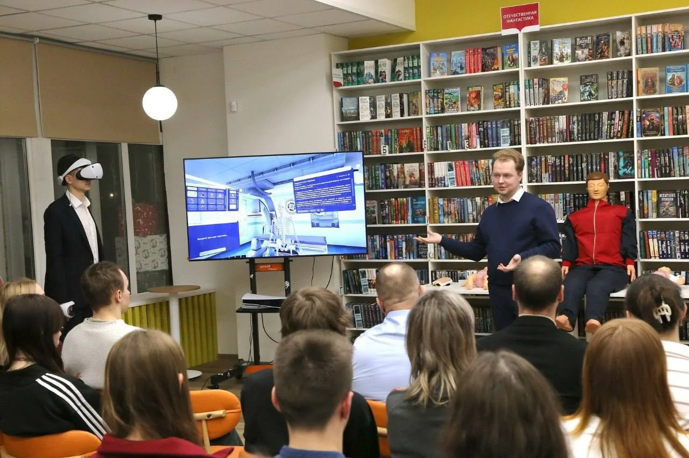
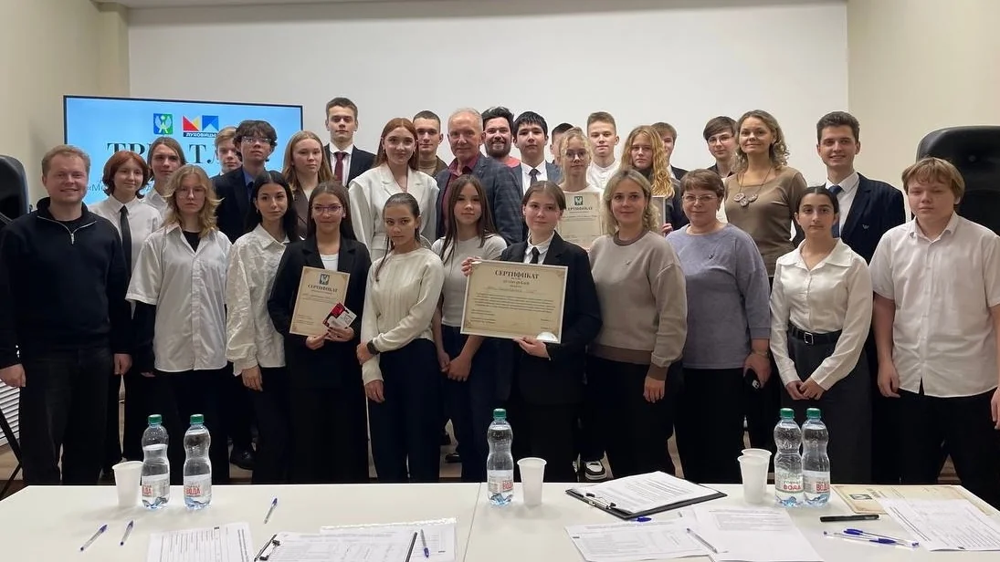

Свой округ.
Наше дело.
Молодёжный парламент Луховиц — совещательный и консультативный орган при Совете депутатов. Представляем интересы молодых жителей и участвуем в жизни своего округа.
↓
парламентариев
при Совете депутатов
Наши задачи
Представляем интересы молодёжи на местном и региональном уровне. Осваиваем парламентскую и законопроектную работу, развиваем правовую культуру.
Направления
деятельности
Мероприятия
и проекты
Работа с депутатским корпусом
01 / 08Общественные
приёмы
Работаем рядом с депутатами: участвуем в общественных приёмах, обсуждаем обращения и выходим на совместные мероприятия.
На приёмах разбирали обращения об уборке подъездов и летнем водоснабжении в деревне Буково.
Работа парламента в июле ↗
Патриотизм и память
02 / 08

Митинги
памяти
Участвуем в митингах памяти и возлагаем цветы к мемориалам.
19 декабря 2025 года вместе с жителями округа почтили память военнослужащих, погибших при исполнении долга.
Правовая грамотность
03 / 08Избирательный
диктант
Разбираемся в избирательном праве и устройстве выборов. Диктант помогает проверить знания и увидеть, в каких вопросах стоит разобраться глубже.
Очный и онлайн-форматы · сентябрь 2026
Как прошёл диктант ↗Открытый диалог
04 / 08
100 вопросов
лидеру
Встречаемся с людьми, которые отвечают за важные сферы жизни округа. Говорим об их работе, профессиональном пути и решениях, которые приходится принимать.
Начальник Луховицкой Госавтоинспекции,
подполковник полиции.
Забота об округе
05 / 08Субботники
и «Чистый лес»
Выходим на субботники зимой, весной и летом. Убираем общественные территории вместе с жителями, волонтёрами и депутатами.
На акции «Чистый лес» собирали и вывозили мусор на 7-м карьере. Хотим, чтобы беречь свой округ стало повседневной привычкой.
Акция «Чистый лес» ↗
Городская среда
06 / 08Проверка
площадок
Улица Пушкина
Участвуем в проверках городской среды. На улице Пушкина осмотрели детские и спортивные площадки вместе с председателем Совета депутатов и отделом благоустройства.
Серьёзных нарушений, угрожающих детям, не выявили. Отдельные замечания зафиксировали и передали в работу отделу благоустройства.

Профориентация
07 / 08Знакомство
с медициной
«Профинтеграция медицина»
Участвуем в проекте, который знакомит школьников с медициной через общение с профессионалами.
На открытии в библиотеке имени И. И. Морозова встретились школьники, преподаватели, представители больницы и депутаты. Такой разговор помогает осознаннее подойти к выбору будущей профессии.
Открытие проекта · 12 февраля 2026

Культура и общение
08 / 08Литературное троеборье
ТРИАТЛИТ*
Организовали турнир к Международному дню школьных библиотек.

Стихи
Читаем авторские произведения.
Викторина
Проверяем литературные знания.
Дебаты
Защищаем свою точку зрения.
27 октября 2025
Центральная библиотека им. И. И. Морозова
На связи.
Анонсы встреч и отчёты о работе — в наших сообществах.